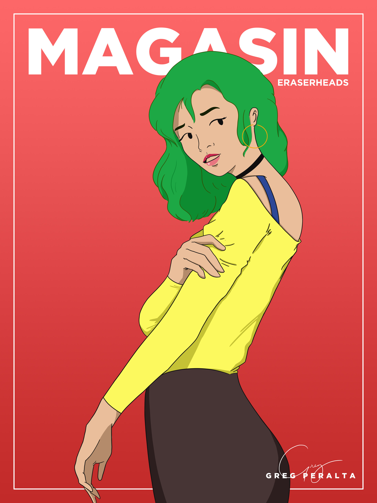
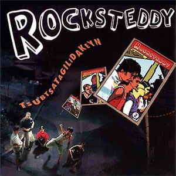
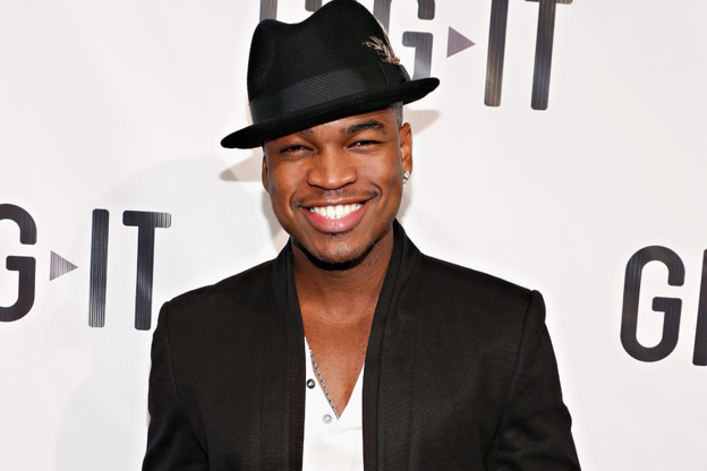
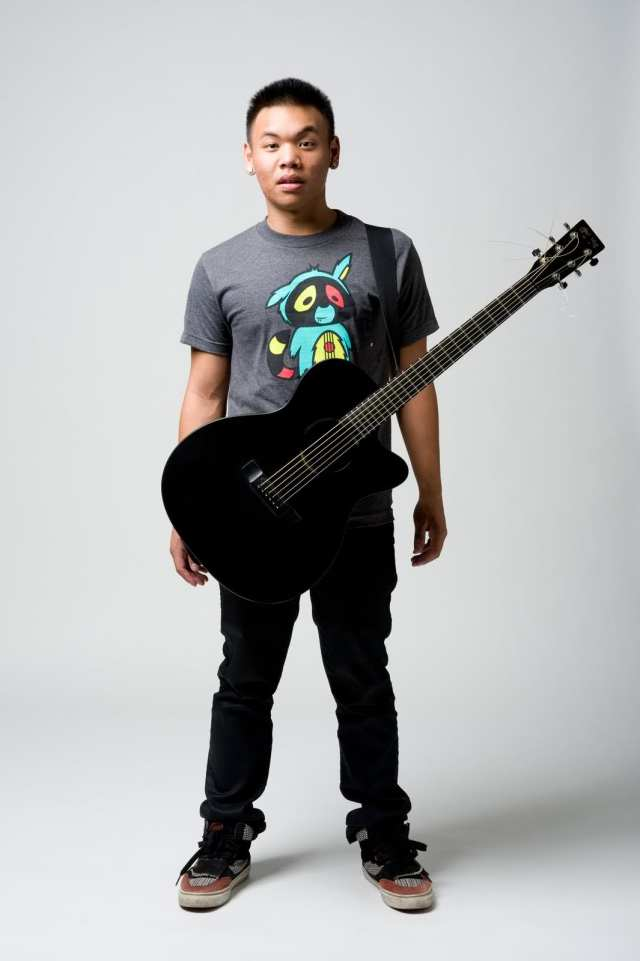
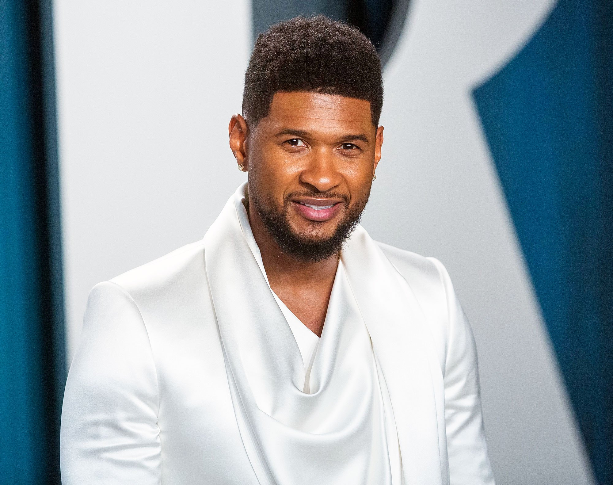
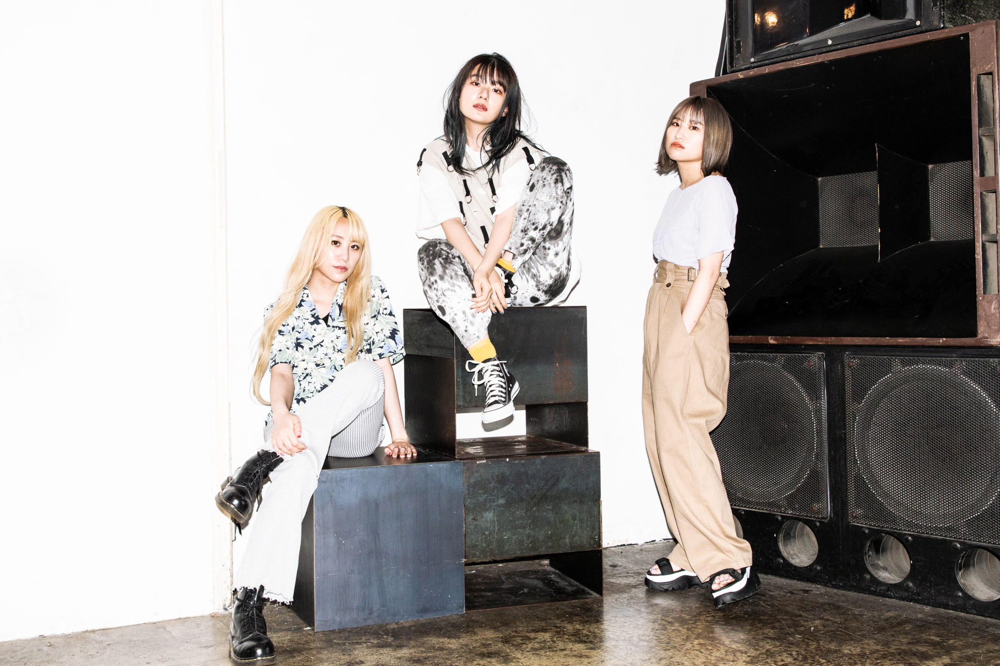
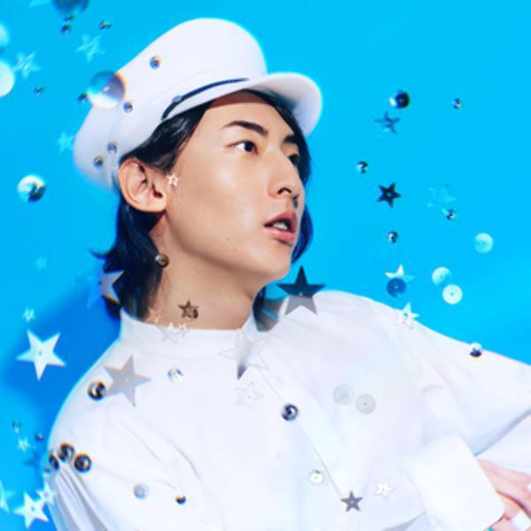
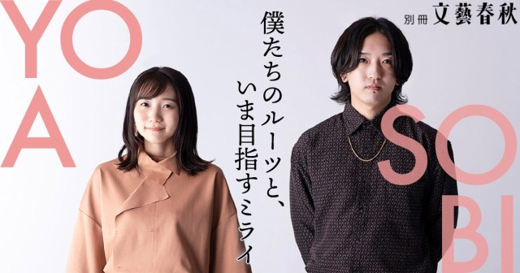

Original Pilipino Music (OPM) is a genre of music that has a special place in my heart. Its uniqueness, melody, and rhythm gives me a nostalgic and calming feeling. As Filipinos, the lyrics is relatable as it is spoken in our very own language; it makes OPM more soothing to the ears. Finally, OPM never fails to remind me how great Filipino singers/songwriters are.
LATINA by Al James
Magasin by Eraserheads
Lagi Mo Nalang Ako Dinidedma by Rocksteddy
Like OPM, R&B has a calming effect. Since, most R&B narrates about overcoming a struggle and succeeding, it is capable of uplifting your spirits and improving your mood. R&B also helps us rationalize over upcoming decisions and help us make the right choice. Artists like AJ Rafael, Ne-Yo, and Usher are among my favorites when it comes to R&B. Their songs makes you feel how important something is. For me, R&B is one of the best genres of music that can instill an array of varied feelings.
Never Knew I Needed by Ne-Yo
She Was Mine by AJ Rafael
My Boo by Usher
Anime has a unique ability to grow with its viewers. From childhood up until adulthood, anime series that has 1000 episodes or more, is what makes me feel this way. Its characters really grows old with time, and it feels like you are growing with them at the same time. This is where anime OSTs comes into play. The nostalgia hits whenever you hear its old soundtracks. Some of my favorite anime songs are included here such as Black Catcher, Tracing that Dream, and Centimeter.
Centimeter by The Peggies
Black Catcher by Vickeblanka
Tracing That Dream by YOASOBI